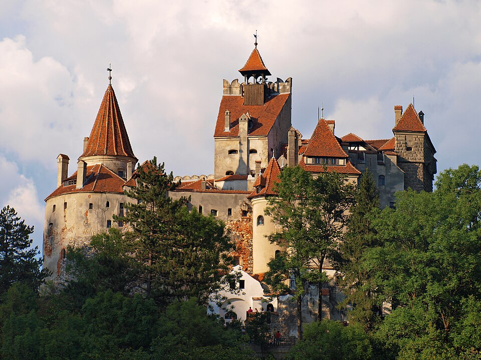
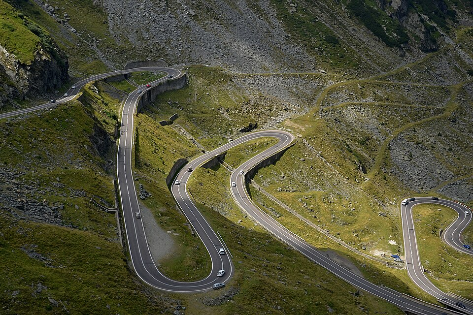
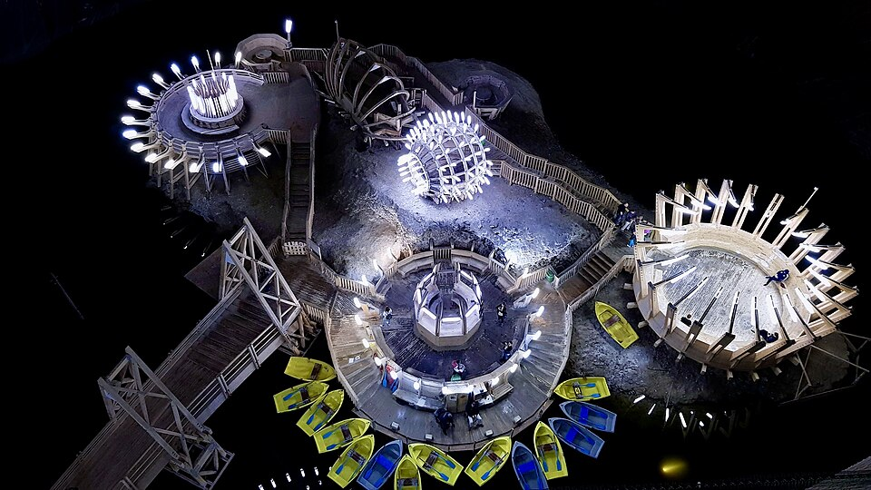
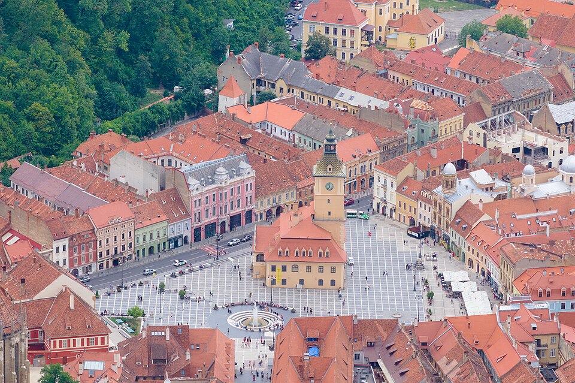

Romania루마니아 România
트란실바니아의 요새도시와 카르파티아, 도나우 삼각주의 나라
- Capital
- 부쿠레슈티 (București)
- Language
- 루마니아어
- Currency
- 루마니아 레우 (RON)

브란 성(드라큘라 성)Bran Castle
트란스파가라산 산악도로Transfăgărășan road
투르다 소금광산Salina Turda salt mine
브라쇼브 구시가지 광장Council Square, BrașovExplore Romania
루마니아 더 알아보기
트란실바니아의 요새도시와 카르파티아산맥, 부코비나의 벽화 수도원, 흑해로 흘러드는 도나우 삼각주가 루마니아의 다양한 지리·문화권을 구성한다. 언어는 슬라브계가 아니라 라틴어에서 발전한 로망스어이며 자동차 제조업·ICT·에너지·농업 등 산업기반도 크다.


Latest updates
루마니아 최근 뉴스
-
루마니아, EU 내 물가상승률 최고 수준 지속…에너지 바우처 검토
RRI에 따르면 10월 유로존과 EU의 연간 물가상승률은 4%로 올랐고 루마니아가 다시 EU에서 가장 높았습니다.
-
EU 가을 전망: 루마니아 2026년 -0.3% 역성장, 물가 7.9%·재정적자 6%
RRI에 따르면 유럽위원회는 17일 가을 경제 전망에서 루마니아가 2026년 완만한 경기침체를 겪어 성장률이 -0.3%(봄 전망 +0.1%)라고 봤습니다. 2027년은 1.8%, 2028년은 2.2% 성장을 전망했고 EU 평균은 2026년 1.4%입니다.
-
루마니아 브란체아 인근 규모 5.7 지진…수년래 최강, 몰도바·우크라이나서도 진동
키이우인디펜던트는 루마니아 지구물리연구소를 인용해 18일 새벽 규모 5.7 지진이 깊이 약 120km에서 발생했다고 전했습니다. BTA는 브랜체아(Vrancea) 지진대에서 났고 불가리아 북부에서도 느껴졌다고 보도했습니다.